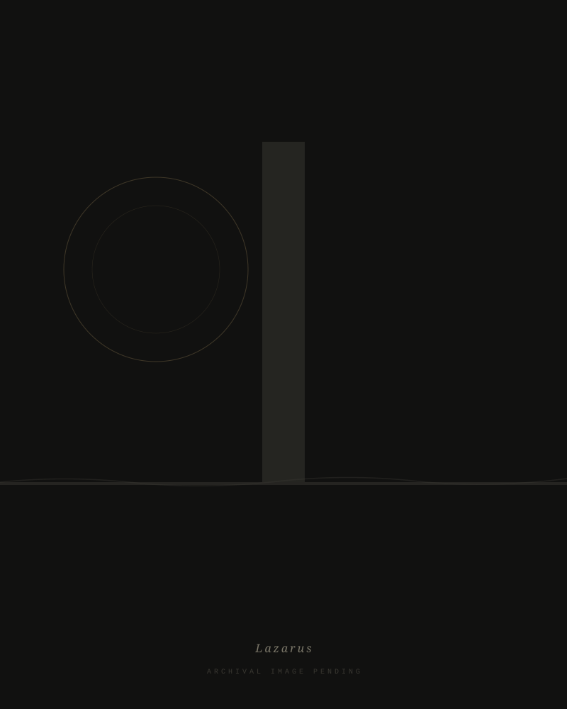
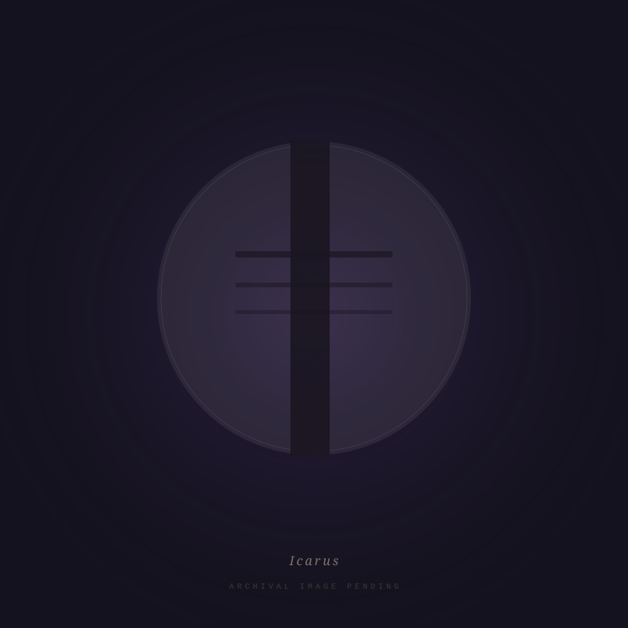

Si monumentum requiris, circumspice
"Work that treats existence itself as a form of monumental resistance."
T.E. Greenway is a UK-based artist working across printmaking and installation. Their practice interrogates the weight of presence — the way things persist, accumulate, and endure within landscapes both physical and psychological.
A recurring visual language of monolithic forms, torn surfaces, and luminous orbs runs through the work — from the intimate scale of the sketchbook to the immersive scale of the installation environment.

Work 01 — 2025
A large-scale monoprint on paper, presented as a hanging scroll suspended from stained wooden battens. Printed landscape forms — monolithic verticals, a torn horizon, a gilded orb — layered across crumpled paper that carries the memory of its own handling.
The title invokes resurrection and return — the persistence of form against dissolution.

Work 02 — 2025
A figure printed against a deep violet ground, caught between the horizontal pull of the landscape and the vertical reach of the monolith. The orb — luminous, indifferent — occupies the centre of the composition.
Where Lazarus speaks of return, Icarus speaks of the cost of ascent — the body that persists after the fall.
If you seek a monument, look around you.Si monumentum requiris, circumspice — Epitaph of Sir Christopher Wren